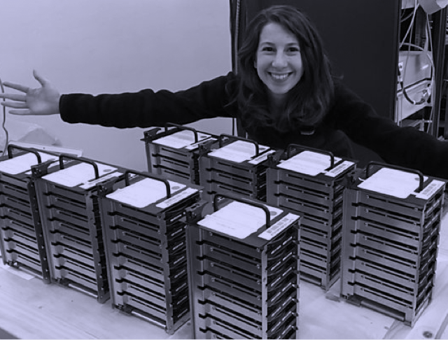
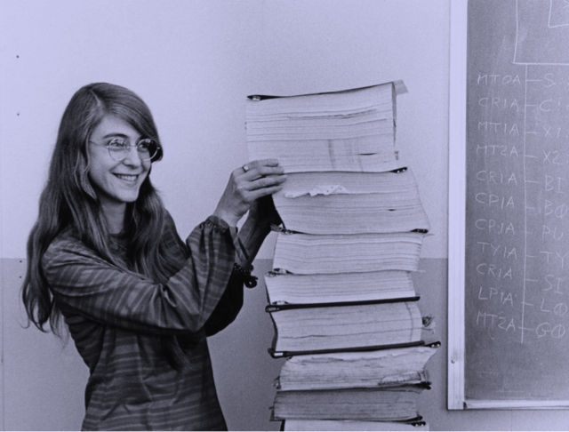
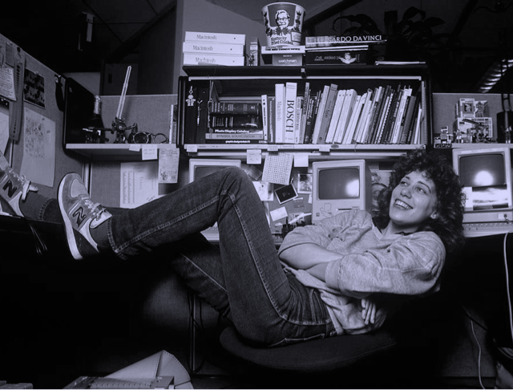
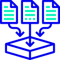
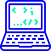

bd
Hello world pale blue dot.
El portal de podcasts que explora el mundo de la programación y
la tecnología. Nuevos episodios, todos los jueves cada 15 días.
Episodios

De dónde venimos
Our posturing, our imagined self-importance,
the delusion that we have some privileged
position in the Universe,
are challenged by this
point of pale light.
Our planet is a lonely speck in the great
enveloping cosmic dark.
In our obscurity, in all
this vastness, there is no hint that help
will
come from elsewhere to save us from ourselves.
Invitadas/os estelares






Algunos de nuestros temas

Trabajo remoto

Repensando la
programación

Bases del código

Seguridad
informática